SETTINGS
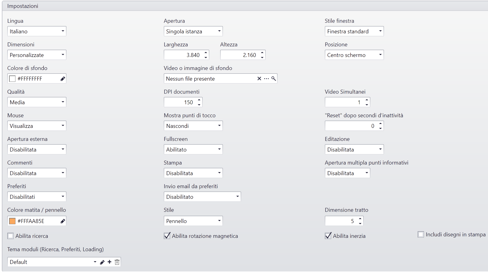
Lingua
Scelta della lingua tra Italiano e Inglese del Media Manager.
Apertura
Singola Istanza: Può essere aperto un solo Touchviewer [default].
Istanze Multiple: Possono essere aperte più finestre del Touchviewer.
Stile finestra
Senza bordi: Il Media Presenter si apre in modalità fullscreen [default].
Standard: Il Media Presenter si apre in modalità windowed.
Dimensioni
Tutto schermo: Il Media Presenter occuperà tutto lo schermo disponibile.
Personalizzate: Il Media Presenter si aprirà alla dimensione impostata nelle proprietà aggiuntive:
- Larghezza: Larghezza della finestra:
- Altezza: Altezza della finestra:
Posizione: Posizione in cui si deve aprire la finestra:
- Centro: La finestra si aprirà al centro dello schermo.
- Personalizzata: La finestra si potrà aprire nella posizione desiderata, impostando le proprietà aggiuntive:
- Sinistra: Posizione rispetto il margine sinistro.
- Alto: Posione rispetto il margine alto.
Background
Colore di sfondo: Tinta unita che deve avere il background dello stage.
Video o immagine di sfondo: Immagine di Default da usare come background.
Adattamento file: Determina la modalità di adattamento del background rispetto allo stage:
- Stira: Il file viene adattato alla risoluzione della finestra senza mantenere le proporzioni originarie [default]
- Nessuno: il file non viene adattato ed è possibile scegliere in quale posizione deve comparire
- Adatta Internamente: Il file viene adattato mantenendo le sue proprozioni all'interno della finestra
- Adatta Esternamente: Il file viene adattato mantenendo le sue proprozioni coprendo tutta l'area visibile dello stage
Qualità
Qualità: Rappresenta l'indice di qualità dell'aspetto grafico generale del software e dei contenuti in esso caricati.
Mouse: Mostra / nascondo il puntatore del mouse.
Punti di tocco: Mostra / nascondo il cursore del touch.
Colore punti di tocco: Indica il colore con cui viene visualizzato il cursore del touch.
DPI Documenti: Determina il fattore di qualità per la conversione automatica dei documenti PDF, DOC, DOCX.
Video simultanei: Determina il numero di video da riprodurre contemporaneamente sullo stage.
Draw-on
Colore matita pennello: Imposta il colore predefinito per la funzionalità draw-on.
Stile: Imposta lo stile predefinito per la funzionalità draw-on.
Dimensione tratto: Imposta la dimensione tratto predefinita per la funzionalità draw-on.
Includi disegni in stampa: Include i disegni nella stampa dei documenti.
Impostazioni generali
Apertura esterna dei file: Abilita l'opzione per l'apertura del contenuto con il programma predefinito di windows.
Full screen: Abilita l'opzione per l'apertura del contenuto a schermo intero.
Editazione: Abilita la funzionalità draw-on su tutti i contenuti.
Stampa: Abilita la funzionalità di stampa su tutti i contenuti.
Preferiti: Abilita la funzionalità aggiungi a preferiti su tutti i contenuti.
Invio email da preferiti: Abilita la possibilità di condividere contenuti tramite email:
Abilita ricerca: Viene abilitata la funzione di ricerca all'interno dell'archivio.
Abilita rotazione magnetica: Quando è abilitata i contenuti potranno essere ruotati a step di 90°.
Apertura multipla punti informativi: Quando è abilitata si potranno aprire più punti informativi alla volta.
Tema moduli: Personalizzazione grafica dei moduli "Preferiti", "Ricerca", etc Vai al Tema Moduli
Impostazioni mail
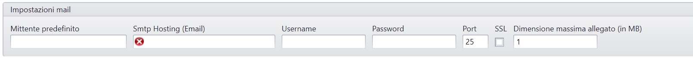
- Mittente predefinito: Indirizzo email predefinito per l'invio delle emal.
- Smtp Hosting: Specificare il protocollo SMTP per la condivisione di contenuti tramite email.
- Username: Specificare lo Username dell'account per la condivisione di contenuti tramite email.
- Password: Specificare la Password dell'account per la condivisione di contenuti tramite email.
- Port: Specificare la porta del protocollo SMTP per la condivisione di contenuti tramite email.
- Ssl: Specificare se l'account smtp richiede l'SSL attivo.
Impostazioni screensaver
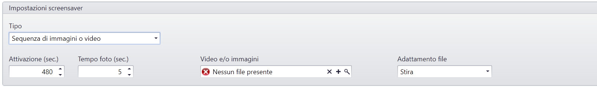
Tipo: Abilita lo screensaver per sequenze di immagini e video.
Attivazione: Valore in secondi che determina l'attivazione dello screensaver in caso di inattività dell'utente.
Tempo foto: Valore in secondi che determina la pausa delle foto in sequenza.
Video e/o immagini: Selezione dei file da importare nello screensaver.
Adattamento file: Determina la modalità di adattamento dei file rispetto allo stage:
- Stira: Il file viene adattato alla risoluzione della finestra senza mantenere le proporzioni originarie [default]
- Nessuno: il file non viene adattato ed è possibile scegliere in quale posizione deve comparire
- Adatta Internamente: Il file viene adattato mantenendo le sue proprozioni all'interno della finestra
- Adatta Esternamente: Il file viene adattato mantenendo le sue proprozioni coprendo tutta l'area visibile dello stage
E' possibile inoltre alternare foto e video all'interno dello stesso screensaver.
Impostazioni Snapshot
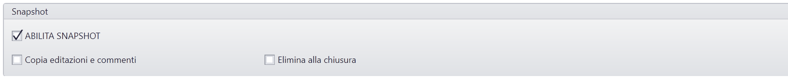
Abilita Snapshot: Abilita la funzionalità Snapshot per creare istantanee dei contenuti
Copia editazione e commenti: all'interno dello snapshot vengono copiati anche eventuali annotazioni e commenti
Elimina alla chiusura: lo snpashot viene eliminato alla chiusura
Impostazioni Zooming User Interface
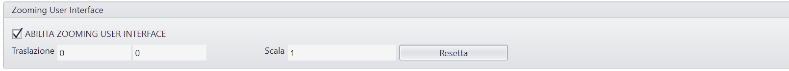
Abilita Zomming User Interface: Abilita la funzionalità Zomming User Interface
Traslazione: Coordinate del punto iniziale in cui è posizionato il centro dello stage infinito
Scala: Scala iniziale dello stage infinito
Resetta: Reset ai valori di default della traslazione e scala
Impostazioni Floating Menù
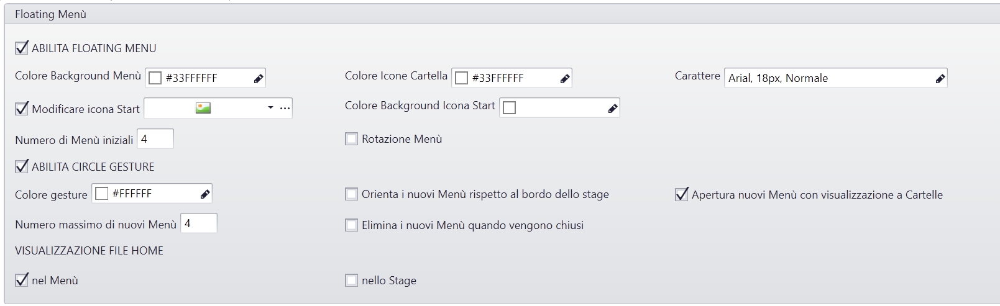
Abilita Floating Menù: Abilita il floating Menù
Colore Background Menù: Imposta il colore del menù
Colore icona cartella: Imposta il colore di sfondo delle icone di tipi cartella
Carattere: Imposta lo stile del Font nei titoli dei file e cartelle
Modificare icona start: Abilita la modifica dell'icona start per aprire menù
Colore background icona start: Imposta il colore di sfondo dell'icona start per l'apertura del menà
Numero di Menù iniziali: Imposta il numero di menù iniziali che è possibile aprire
Rotazione Menù: Abilita la possibilità di aprire i menu
Abilita Circle Gesture: Abilita la gesture Circle per l'apertura dei floating menù
Colore Gesture: Imposta il colore della traccia della gesture circle
Orienta i nuovi Menù rispetto al bordo dello stage: I nuovi menù creati con la gesture circle vengono orientati al bordo dello stage
Apertura nuovi Menù con visualizzazione a Cartelle: Il nuovo menù viene creato già aperto
Numero massimo di nuovi Menù: Imposta il numero massimo di nuovi menù che si possono aprire
Elimina i nuovi Menù quando vengono chiusi: I nuovi menù creati una volta chiusi vengono eliminati dallo stage ed è necessario crearni di nuovi
VISUALIZZAZIONE FILE HOME
nel Menù: I file presenti nella root dell'archivio vengono visualizzati all'interno del menu
nello stage: I file presenti nella root dell'archivio vengono visualizzati sullo stage
Impostazioni Menù Toolbox
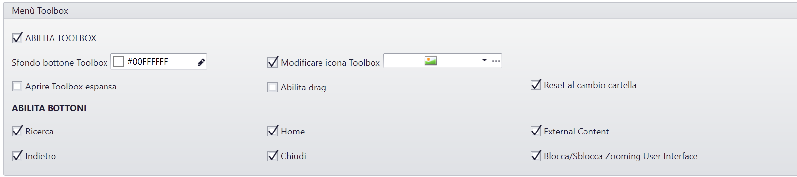
Abilita Tollbox: Abilita la toolbox con gli strumenti utili alla navigazione
Sfondo bottone Toolbox: Imposta il colore di sfondo del del bottone per aprire la toolbox
Modificare icona Toolbox: Modifica l'icona del bottone per aprire la toolbox
Aprire Toolbox espansa: Di default la toolbox viene mostrata già aperta
Abilita Drag: La toolbox può essere spostata sullo stage
Reset al cambio cartella: Quando cambio cartella durante la navigazione la toolbox viene riposizionata nel punto iniziale
ABILITA BOTTONI
Ricerca: Abilita il bottone per l'apertura della ricerca
Home: Abilita il bottone per tornare alla Home
External Content: Abilita il bottone per l'apertura dell'interfaccia per l'importazione dei contenuti esterni
Indietro: Abilita il bottone per tornare alla cartella precedente
Chiudi: Abilita il bottone per la chiusura del touchviewer
Blocca/Sblocca Zooming User Interface: Abilita il bottone per bloccare/sbloccare il trascinamento e zoom della Zooming user interface
Impostazioni Contenuti Esterni
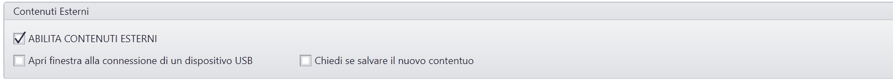
Abilita contenuti esterni: Abilita l'apertura di contenuti esterni
Apri finestra alla connessione di un disposito USB: Viene aperta l'interfaccia per l'importazione dei contenuti esterni, quando una chiavetta USB viene connessa al PC
Chiedi se salvare nuovo contenuto: Quando un contenuto esterno viene chiuso viene chesto se lo si vuole salvare
Impostazioni Preferiti
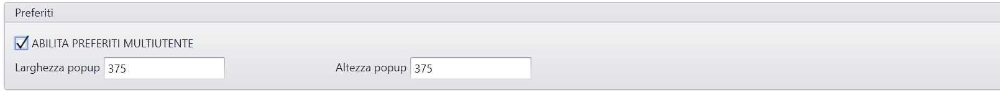
Abilita Preferiti Multiutente: Abilità la funzionalità Preferiti
Larghezza popup: Imposta la larghezza della finestra in cui vengono visualizzati i contenuti preferiti
Altezza popup: Imposta l'altezza della finestra in cui vengono visualizzati i contenuti preferiti
Impostazioni Web Browser
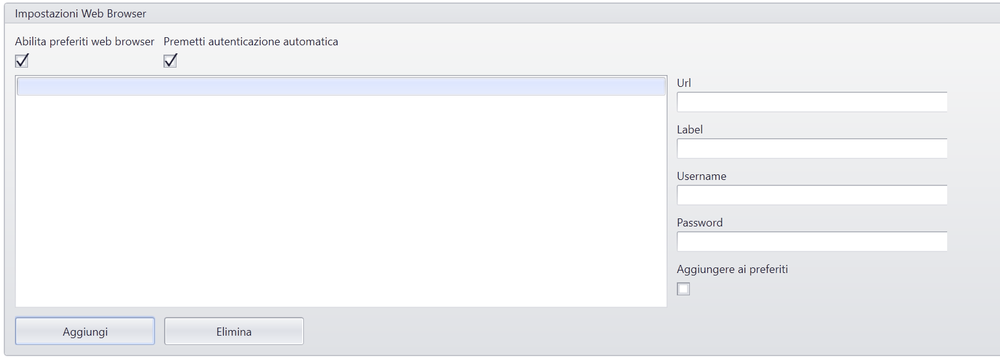
Abilita preferiti web browser: E' possibile abilitare o disabilitare la funzionalità preferiti nel browser
Permetti autenticazione automatica: Abilitare l'inserimento automatico delle credenziali per l'accesso in aree protette
Url: Inserire Manualmente gli URL e la label da visualizzare (eventualmente le relative credenziali di accesso)
Label: Nome che viene visualizzato al posto dell'url nella lista dei preferiti
Username: Username che viene inserito in automatico quando viene richiesto l'inserimento di credenziali per l'accesso al sito
Password: Password che viene inserita in automatico quando viene richiesto l'inserimento di credenziali per l'accesso al sito
Aggiungere ai preferiti: Abilitare o disabilitare un Bookmarks già inserito
Aggiungi: Aggiunge un nuovo preferito
Elimina: Salva un nuovo preferito
Impostazioni Networking
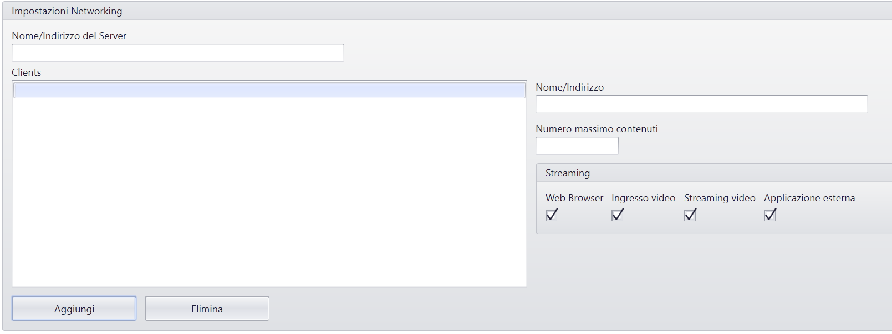
Nome/Indirizzo del Server: Nome/indirizzo ip del Server per utilizzare la Real-Time Collaboration
Clients: Lista dei clients aggiunti al network
Nome/Indirizzo: Nome/indirizzo ip dei clients che fanno parte del network della Real-time collaboration
Numero massimo contenuti: numero massimo di contenuti che si possono aprire contemporaneamente su un singolo clients
STREAMING
Web Browser: Abilita lo stream di un contenuto di tipo web browser
Ingresso video: Abilita lo stream di un contenuto di tipo Ingresso video
Streaming Video: Abilita lo stream di un contenuto di tipo Streaming Video
Applicazione Esterna: Abilita lo stream di un contenuto di tipo Applicazione Esterna
Aggiungi: Aggiunge un nuovo client
Elimina: Elimina il client selezionato